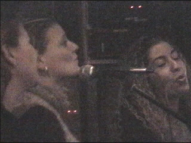
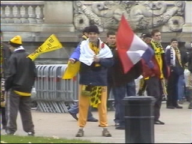
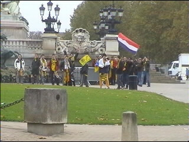
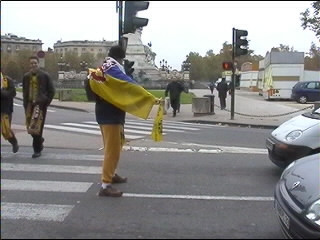
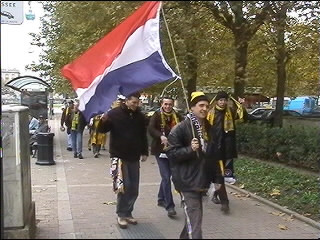
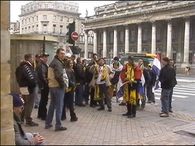
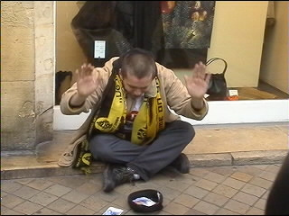
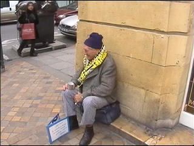
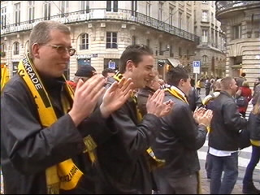
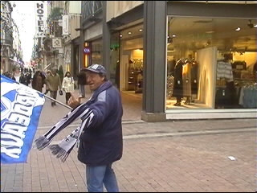

| FC Girondins de Bordeaux - Roda JC 1-0 20 november 2001 |
|1-10|11-20|21-30|31-40|41-50|51-59|

De Roda-meëdsjer zingen iets van UB 40.

Dinsdag 13.00 uur precies! Verzamelen op Esplanade de Quinconces.

Iedereen die klok kon kijken en kaart kon lezen was daar! Er werden een paar
foto's gemaakt en balletje getrapt. Het voorbij schrijdend Franse vrouwenvolk
werd onthaald op bouwvakkersjargon.

Freek regelde het verkeer met zijn vlag en "politie"-fluit.

Zodoende kon iedereen lekker doormarcheren.

Op de achtergond het Grand Theatre op de voorgrond een arme bedelaar.

Nog een bedelaar.....

De echte bedelaar krijgt de opbrengsten plus een warme sjaal!

Bovendien wordt er een Roda-lied voor hem gezongen!

Door de hele stad kwam je plukjes Roda-supporters tegen. Hier zien
we zo waar een "Baguette Bordeaux".